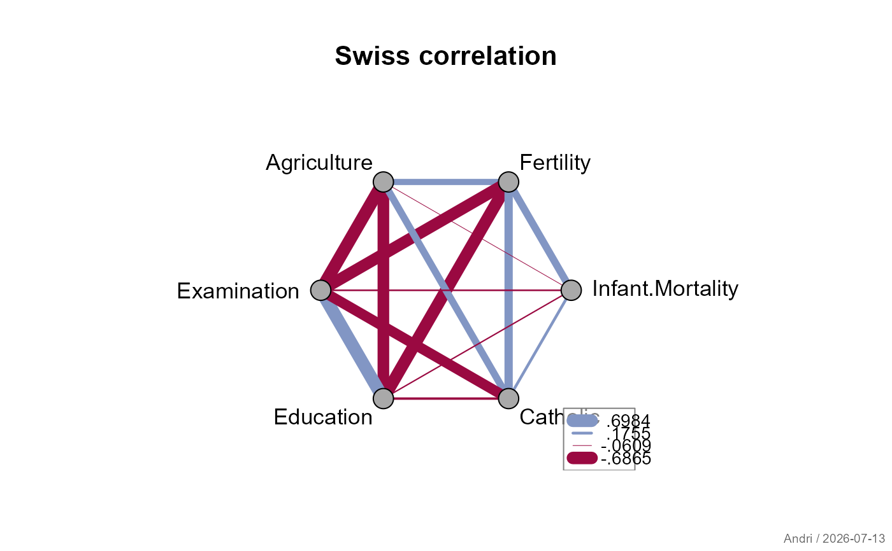
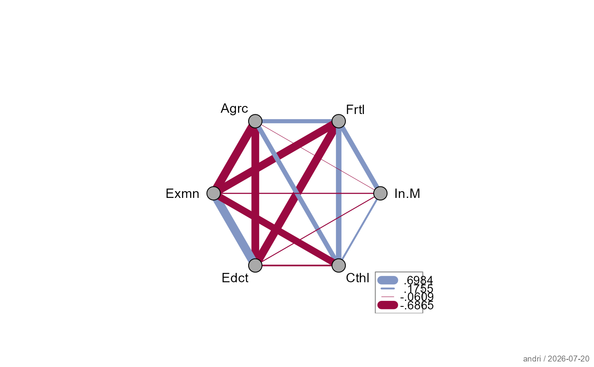
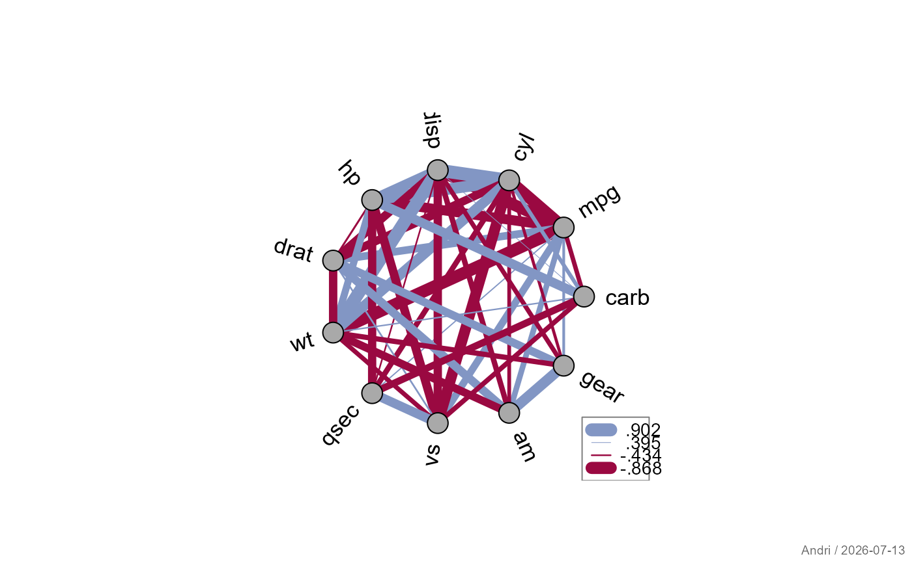

Displays a symmetric matrix (typically a correlation matrix) as a network diagram: variables are placed equidistantly around a circle, and connecting lines between each pair are drawn with width proportional to the absolute value of the matrix entry and color indicating its sign.
Arguments
- m
a symmetric numeric matrix (e.g. a correlation matrix).
- main
main title of the plot.
NULL(default) produces no title.- dist
distance of node labels from the outer circle. Default
0.5.- col
two colors for the connecting lines: the first is used for negative values, the second for positive values.
.useTheme(default) resolves togetTheme()$twin- consistent with the sign-based coloring inplotCor.- lty
line type for the connecting lines.
NULL(default) inherits frompar("lty").- lwd
line widths for the connecting lines.
NULL(default) scales widths linearly between 0.5 and 10 in proportion to the absolute matrix values.- labels
controls node labels around the circle.
TRUE(default) draws labels usingcolnames(m)with default styling.FALSE/NA/NULLsuppresses labels. A named list overrides individual settings:labelscharacter vector of label texts; defaults to
colnames(m)lasorientation:
1horizontal (default),2radial,3verticaladjlabel adjustment (0/0.5/1);
NULL(default) chooses automatically based on position around the circlecexcharacter expansion; default
1.0
- points
controls the node point symbols. The default (
list(pch=21, cex=2, col="black", bg="darkgrey")) draws prominent filled circles, larger than the generic data-point default, since nodes represent variables rather than observations.FALSE/NA/NULLsuppresses the points. A named list overrides individual elements (pch,cex,col,bg).- legend
controls the legend.
TRUE(default) draws a legend showing the line widths and colors for the minimum/maximum positive and negative values.FALSE/NAsuppresses it. A named list overrides arguments forwarded tolegend.- stamp
controls the corner stamp.
.useTheme(default) resolves togetTheme()$stamp.TRUE/FALSE/NULL, a string, or a named list forstamp().- ...
further graphical parameters passed to
parand to the internalcanvas()call.
Value
Invisibly returns a list of x/y coordinates of the
node points, useful for adding further annotations to the plot.
Details
The function uses the lower triangular matrix of m; when
overriding lwd or col manually, values must be supplied in
the same order as m[lower.tri(m)].
See also
Other plot.special:
plotBinaryTree(),
plotCirc(),
plotMiss(),
plotPolar(),
plotPropCI(),
plotTernary(),
plotTimeSeries(),
plotTreemap()
Examples
m <- cor(swiss)
plotWeb(m, main = "Swiss correlation")

# custom labels (abbreviations)
plotWeb(m, labels = list(labels = abbreviate(colnames(m), 4), cex = 0.9))

# show only significant correlations
p <- outer(
(vars <- colnames(mtcars)), vars,
Vectorize(function(v1, v2)
cor.test(mtcars[[v1]], mtcars[[v2]])$p.value)
)
dimnames(p) <- list(vars, vars)
m2 <- cor(mtcars)
m2[p > 0.05] <- NA
plotWeb(m2, labels = list(las = 2))
